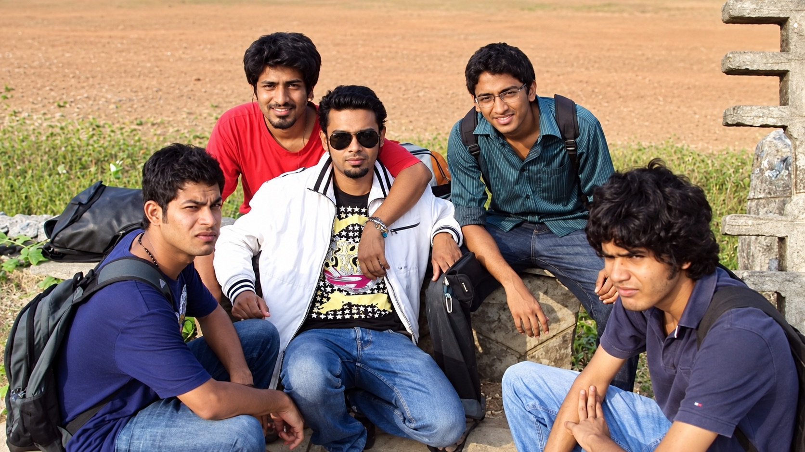
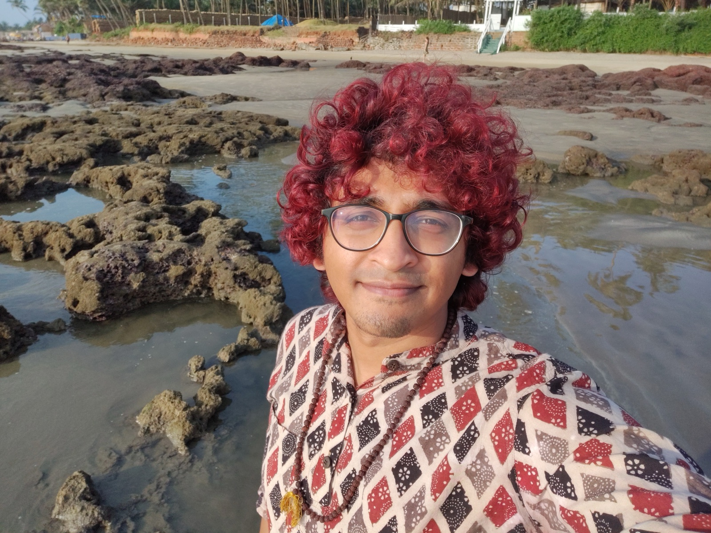

About · My Path
Checking out was once my default.
For a long time, I coped by making my world smaller.
What life looked like then
I disappeared into games, drugs and other forms of escape. Dishonesty became a reflex. Much of that time is hazy in memory.
Discipline was difficult. So were relationships, commitments and everyday tasks. Outside controlled environments, ordinary situations could overwhelm me and become crises.
By 24, university had been left behind and trust in myself was almost gone.
I could know what mattered.
I could want change with everything in me.
Still, following through felt out of reach.
Helplessness set in. Life felt hopeless.
Relief had been searched for, but the misery underneath remained.
In that state, I returned to something from childhood that had long been dismissed: pranayama and meditation.

One morning, I woke with a sense that life was beautiful and that I still had a place in it.
That experience opened a door.
I began years of healing, personal development and spiritual practice. Slowly, I understood that my patterns had histories, and that what had felt fixed could move.
Much of the early change happened within practices, workshops and healing spaces.

Then ordinary life took the work further.
Relationships. Responsibility. Keeping my word. Telling the truth. Repairing harm. Staying when I wanted to disappear.
These showed me layers of avoidance that no session could reach on its own.
The challenges did not disappear.
They grew in scale and consequence.
So did my capacity to meet them.
Today, blind spots and overwhelm still arise.
What has changed is the trust I carry into them.
How I meet life now
There is more trust in the capacity to digest what comes, find a way through and do what is needed.
Life is deeply valued, along with its range.
Deep rest and full intensity.
Peace and movement.
The ordinary rhythms of home and the larger work that calls.
Life invigorates me. I feel at home in it.
What has been learned comes from a path still being walked.
There is a responsibility to offer it where it may support another.
The Dream
A tipping point where enough people shaping our world are willing to face what is difficult.
Within themselves.
Within the systems they lead.
The wider dream
That willingness changes how power is held.
Accountability, responsibility and integrity begin with the questions we are willing to ask before a decision is made:
What does this serve?
Whom will it affect?
What will it cost?
What we refuse to face does not disappear. Its cost is carried somewhere, often by other people, other species or those who come after us.
As more becomes visible, the frame widens. Human lives, other species, ecosystems and future generations begin to appear as part of the same whole.
What we create can then be shaped with that whole in mind.
A world where power serves life.
If this is a future worth helping shape, how we meet our own lives is part of the work.
Request an Alignment Call